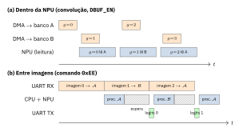
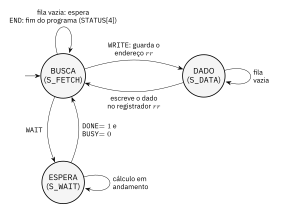

Memórias e controle¶
Enquanto o controlador (npu_controller.vhd) decide quando cada coisa acontece, o caminho de dados (npu_datapath.vhd) define como os dados trafegam entre as memórias locais, o núcleo, as PPUs e a FIFO de saída.
Memórias locais (scratchpads)¶
Para não buscar pesos e ativações na memória principal a cada uso, a NPU tem duas memórias locais de porta dupla (ram_dual):
- RAM de pesos: os parâmetros aprendidos;
- RAM de ativações: as entradas da camada corrente.
Uma porta de cada memória fica com a interface MMIO, para a escrita pelo hospedeiro, e a outra com o controlador, que alimenta o arranjo a uma palavra por ciclo durante o cálculo.
Princípio da localidade
As memórias locais exploram a localidade dos dados: o que já está dentro da NPU é reaproveitado por vários tiles sem voltar a atravessar o barramento do sistema.
Além delas, o caminho de dados reúne:
- Bases de região (
W_BASEeI_BASE): dividem as memórias em regiões, para que os pesos de cada camada fiquem residentes na sua própria região; - Memória de pesos em bancos (
wgt_mem_banked): no modo GEMV, a RAM de pesos é organizada em 4 bancos e entrega 16 pesos por passo, um para cada PE; - Memória de imagem do im2col: 4 cópias da imagem crua, uma por linha do arranjo, que substituem a RAM de ativações na convolução (ver Movimentação de dados);
- Banco de vieses: 8 vetores de 4 colunas, selecionados por tile.
Double buffering (ping-pong)¶
Com um único banco, a mesma região é usada para a escrita pelo hospedeiro e para a leitura pelo núcleo, e o hospedeiro precisa esperar o fim de um tile antes de carregar o seguinte: a movimentação de dados fica em série com o cálculo.
Quando o IP é gerado com o generic DOUBLE_BUFFER => true, cada memória é duplicada em dois bancos físicos (A e B). A cada START com o bit DBUF_EN, o controlador troca os bancos: passa a ler o que acabou de ser preenchido e libera o outro para a próxima escrita, que pode acontecer mesmo com a NPU ainda ocupada. Assim, a carga do tile seguinte se sobrepõe ao cálculo do atual.

START com DBUF_EN. (b) O mesmo princípio entre imagens, no firmware (comando 0xEE): a recepção da próxima imagem pela UART se sobrepõe ao processamento da atual.Retrocompatibilidade
DOUBLE_BUFFER vale false por padrão, o que preserva a estrutura e o consumo de BRAM da versão de banco único. Mesmo com o generic ligado, se o software nunca usa DBUF_EN (bit 8 de CMD), a NPU permanece no banco 0 e se comporta como a versão original.
Da saída do arranjo à FIFO¶
A saída do arranjo é um vetor com os acumuladores das quatro colunas. Um generate instancia uma PPU por coluna, cada uma com a sua fatia do acumulador e o seu viés. No modo GEMV, as quatro somas parciais de cada coluna são reduzidas antes da PPU.
Depois da quantização, os resultados entram numa fila circular (fifo_sync) de 256 palavras, que desacopla o cálculo da leitura pela CPU. O formatador de saída (OUT_CFG) pode entregar as linhas na ordem 0 a 3 (por padrão, a drenagem começa pela linha 3), desempacotá-las em uma ativação por palavra ou, com LOOP, escrevê-las de volta na RAM de ativações, para que a camada seguinte as leia sem passar pela memória principal.
Controlador¶
O controlador (npu_controller.vhd) é o micro-sequenciador da NPU: uma máquina de quatro estados (IDLE, COMPUTE, DRAIN e FLUSH) que traduz os comandos de alto nível em sinais de controle ciclo a ciclo.
IDLE¶
Estado de repouso. Ao receber o START, a máquina captura a configuração da execução (número de passos CONFIG, número de tiles, modo) e, se pedido, volta os ponteiros de leitura às bases das regiões. Com double buffering e DBUF_EN, é neste instante que os bancos são trocados.
COMPUTE¶
A cada ciclo em que os dados estão disponíveis, o controlador emite uma leitura das memórias de pesos e de ativações e avança os ponteiros; com streaming, uma leitura só é emitida quando o seu dado já foi escrito. Emitidas as \(K\) leituras do tile, o controlador espera a latência do pipeline (leitura da BRAM, registro de entrada do núcleo e o skew do arranjo, 11 ciclos) para que os últimos dados atravessem o arranjo. Se o comando pede para não drenar (sinal cmd_no_drain), a máquina volta a IDLE preservando os acumuladores, o que permite somar vários blocos de \(K\) no mesmo resultado; caso contrário, avança para DRAIN. No modo encadeado (OVERLAP), os tiles seguem um após o outro sem passar por DRAIN, e a máquina vai direto a FLUSH depois da última leitura.
DRAIN e contrapressão¶
Na drenagem, o controlador emite acc_dump por \(R=4\) ciclos: os acumuladores descem uma linha por ciclo até as PPUs, e a linha 3 sai primeiro. Cada ciclo de drenagem gera na FIFO uma palavra de 32 bits, com um byte por coluna, e deixa os acumuladores zerados para o tile seguinte. A drenagem só começa quando a FIFO comporta o tile inteiro: se a CPU não estiver lendo rápido o suficiente, as somas ficam guardadas nos PEs até haver espaço. Se ainda restam tiles, a máquina volta a COMPUTE, com os ponteiros retornando às bases conforme RW_W e RW_I.
FLUSH¶
Antes de sinalizar DONE, a máquina espera os últimos resultados atravessarem a redução GEMV, a PPU e a FIFO (no modo encadeado, somada à latência do arranjo, porque o último tile ainda está saindo dele).
Extensões do controlador¶
O controlador também implementa os mecanismos de movimentação de dados:
- Sequenciador de tiles: um
STARTexecutaTILES[15:0]tiles, com retorno opcional dos ponteiros às bases (RW_W,RW_I) e troca do vetor de viés por tile; - Interlocks de streaming: com
STREAM_IouSTREAM_W, cada leitura só é emitida quando o seu dado já foi escrito na memória local, e o cálculo avança junto com a carga; - Tiles encadeados: com
OVERLAP, o fim de cada tile é marcado nas ativações, e o retorno dos ponteiros é aplicado na emissão seguinte, sem esvaziar o arranjo; - Modo GEMV: gera o endereçamento dos 4 bancos de pesos e o atraso por PE.
Processador de comandos¶
Com os dados resolvidos pelos mecanismos de movimentação, o custo que sobra é o do controle. Cada camada precisa de uma dúzia de escritas de configuração (bases das memórias, geometria do im2col, número de passagens, modo, quantização) e de um disparo, seguido da espera pelo fim do cálculo. Feita pela CPU, cada escrita custa dezenas de ciclos de instruções e de barramento, e a espera exige consultar o registrador de estado repetidas vezes.
O processador de comandos (npu_cmd_proc.vhd) tira esse trabalho da CPU: em vez de escrever os registradores, ela entrega à NPU um programa que os escreve.
Instruções¶
O programa é uma sequência de palavras de 32 bits com três instruções, distinguidas pelos 4 bits mais altos. A instrução WRITE ocupa duas palavras, o cabeçalho com o endereço do registrador e o dado, e pode escrever qualquer registrador de configuração, inclusive o de comando, que dispara o cálculo.
| Instrução | Palavras | Efeito |
|---|---|---|
WRITE |
0x1000_00rr, dado |
escreve o dado no registrador de endereço rr |
WAIT |
0x2000_0000 |
espera o cálculo disparado terminar (DONE e não BUSY) |
END |
0x3000_0000 |
fim do programa (bit 4 do registrador de estado) |
Execução¶
As palavras chegam pela porta DESC e entram numa fila de 128 posições, de onde a máquina de estados as consome. No estado de busca, ela retira um cabeçalho da fila: se for um WRITE, guarda o endereço e vai ao estado de dado, onde retira a palavra seguinte e a escreve no registrador; se for um WAIT, vai ao estado de espera e só volta à busca quando o controlador indica que o cálculo terminou; se for um END, sinaliza o fim do programa. Palavras desconhecidas são ignoradas.

WRITE passa pelo estado de dado; cada WAIT prende o programa até o fim do cálculo disparado.Três regras garantem que nada se perca:
- Com a fila cheia, a escrita na porta
DESCsegura o barramento até abrir espaço. - Enquanto um programa executa, escritas de configuração vindas do barramento esperam o programa terminar, mas as portas de dados continuam livres, para que a imagem chegue durante o cálculo.
- Uma leitura da porta de saída espera o próximo resultado, de modo que a CPU pode ler os logits sem consultar o estado.
Exemplo: a CNN do MNIST¶
No firmware do SoC, o programa da rede inteira é uma constante, montada uma única vez na RAM. A macro D_WR gera as duas palavras de um WRITE, e cada linha do código é uma instrução, com o seu mnemônico no comentário. O programa tem 53 palavras, que cabem inteiras na fila, em três partes:
- Convolução: quantização da PPU com ReLU, região dos pesos, geometria do im2col, \(K=9\), 43 passagens encadeadas com saída na memória de ativações e cálculo durante a chegada da imagem; em seguida, dispara o cálculo e espera o fim.
- Camada densa: reconfigura apenas o que muda: sem ReLU, ativações lidas da memória, modo GEMV, \(K/4=169\) passos e três blocos, cada um com o seu viés.
- Epílogo: devolve os modos ao padrão e zera o ponteiro de escrita da imagem, preparando a próxima inferência.
#define D_WR(reg, val) (0x10000000u | (reg)), (uint32_t)(val) // WRITE: 2 palavras
#define D_WAIT 0x20000000u // WAIT
#define D_END 0x30000000u // END
static const uint32_t cnn_prog[] = {
// ---- Convolução 3x3, passo 2, 4 filtros, ReLU ------------------------------
D_WR(0x44, 1), // WRITE QUANT_MULT, 1 ; PPU: M = 1
D_WR(0x40, 8), // WRITE QUANT_CFG, 8 ; PPU: S = 8 (divide por 256)
D_WR(0x48, 1), // WRITE FLAGS, RELU ; PPU: liga a ReLU
D_WR(0x20, W_CONV_BASE), // WRITE W_BASE, conv ; região dos pesos da Conv
D_WR(0x24, 0), // WRITE I_BASE, 0 ; saída no início da RAM de ativações
D_WR(0x2C, IM2COL_GEOM), // WRITE IM2COL_GEOM ; 28x28, 13 janelas/linha, passo 2, 3x3
D_WR(0x30, 169), // WRITE IM2COL_NWIN, 169 ; total de janelas
D_WR(0x28, 1), // WRITE IM2COL_EN, 1 ; ativações vêm do im2col
D_WR(0x08, 9), // WRITE CONFIG, 9 ; K = 9 passos por passagem
D_WR(0x34, 43|RW_W|(3<<19)), // WRITE TILES ; 43 passagens, relê pesos, viés no banco 3
D_WR(0x38, ORDER|LOOP), // WRITE OUT_CFG ; saída em ordem, na RAM de ativações
D_WR(0x3C, STREAM_I|OVERLAP), // WRITE MODE ; calcula enquanto a imagem chega
D_WR(0x04, 0x36), // WRITE CMD, START ; zera acumuladores e ponteiros; dispara
D_WAIT, // WAIT ; espera a Conv terminar
// ---- Densa 676 -> 10, modo GEMV --------------------------------------------
D_WR(0x40, 8), // WRITE QUANT_CFG, 8 ; PPU: S = 8
D_WR(0x48, 0), // WRITE FLAGS, 0 ; PPU: sem ReLU (logits)
D_WR(0x28, 0), // WRITE IM2COL_EN, 0 ; ativações vêm da RAM (saída da Conv)
D_WR(0x20, W_FC_BASE), // WRITE W_BASE, densa ; região dos pesos da densa
D_WR(0x38, 0), // WRITE OUT_CFG, 0 ; saída na FIFO, lida pela CPU
D_WR(0x3C, GEMV|OVERLAP), // WRITE MODE ; 4 linhas repartem as entradas
D_WR(0x08, 676/4), // WRITE CONFIG, 169 ; K/4 passos por bloco
D_WR(0x34, 3|RW_I|BIAS_TILE), // WRITE TILES ; 3 blocos, relê entradas, viés por bloco
D_WR(0x04, 0x36), // WRITE CMD, START ; dispara
D_WAIT, // WAIT ; espera a densa terminar
// ---- Epílogo: prepara a próxima imagem -------------------------------------
D_WR(0x3C, 0), // WRITE MODE, 0 ; volta ao modo normal
D_WR(0x34, 0), // WRITE TILES, 0 ; uma passagem por disparo
D_WR(0x04, 0x80), // WRITE CMD, RST_WR_I ; zera o ponteiro de escrita da imagem
D_END, // END ; fim do programa
};
A cada inferência, a CPU envia esse programa por DMA para a porta DESC, em 264 ciclos, e não escreve mais nenhum registrador da NPU. O código completo está em fpga/sw/server/cnn_server.c, no repositório do SoC RISC-V.